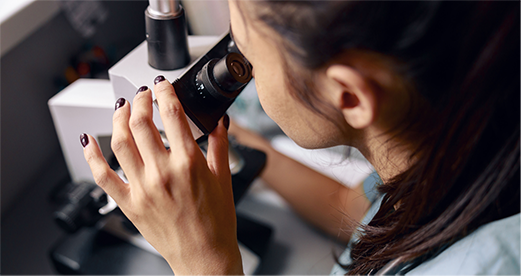

LE PAIN
R&D CENTER
르빵은 고객님에게 최고의 베이커리를 경험할 수 있도록 노력하고 있습니다.
빵은 인류 문명의 서광과 함께 6천년 이상을 살아온 발효식입니다. 르빵은 건강한 빵, 숨쉬는 빵,풍미가 가득한 빵을 만들기 위해 원천 기술 개발에 대한 투자를 아끼지 않고 있습니다.
제빵 적성이 우수한 효모 자원을 개발 및 배양하고 종래 상업용 효모와 차별적인 풍미를 지니면서도 식감이 좋고 소화를 돕는 건강한 빵의 제조를 가능하게 합니다. 베이커리 산업의 활성화에 기여하기 위해 오늘도 LEPAIN R&D CENTER는 불철주야 연구에 매진하고 있습니다.
발효종 개발 및 배양 관련 연구 진행
국내 제과용 효모 배양 관련 최첨단 장비 투자 및 가동
고유 발효종 효모 관련 특허 1건 출원 완료
관련 특허 14건 출원 진행
효모 동정 및 국제기탁 컨설팅 서비스
르빵의 효모 개발 연구는 현재 바이오산업의 핵심인 마이크로바이옴으로 확장성을 지니며 인간의 신체에 공생하는 유익균 생태계에 기여하기에 건강기능식의 개발에도 적용될 예정입니다. 이로서 건강한 식문화를 선도하는 르빵의 핵심경쟁력이 바이오산업으로 발전하는 초석이 되고 있습니다.
- 
르빵의 독보적인 지식재산권과
권위있는 특허 관리 전문가

신동호
변리사. 바이오/화학 전문 특허 컨설팅- 서강대학교 생명과학과 졸업
- 서강대학교 생명대학원 분자미생물학 연구실 연구원
- 제52회 변리사 시험 합격
- (현) 거번국제특허법률사무소 변리사
- (전) 특허법인 지원 변리사
- (전) 에이치 국제특허법률사무소 대표 변리사
- 정부 R&D 특허설계 지원사업
- 글로벌 기술혁신 IP 전략개발사업
- 맞춤형 특허맵(PM) 지원사업
다년간 생명과학, 화학 분야 특허 컨설팅을 전문적으로 담당하고 국제 기술 거래 자문에 이르기 까지 폭넓은 경력을 쌓아온 신동호 변리사가 르빵과 함께 합니다. 르빵은 원천 기술을 개발 보유하고 이에 관련된 지식재산권을 확보하는데 그치지 않고 보호하고 발전시키며 대외 경쟁력을 강화하는데 종력을 다하고 있습니다.
Patent 특허
특허를 출원으로 입증되고 있습니다. 상용화 된 시판 이스트의 단점을 보완하고 우수한 발효력과 뛰어난 풍미, 부드러운 식감을 연출하는 르빵만의 효모기술은 건강식으로서의 빵의 기능성과 생산성, 풍미가 뛰어난 미식으로서의 가치를 여는 핵심 경쟁력입니다.
- 출원번호 : 10-2021-0086097 (특허균주)
-
이취가 감소된 신규 사카로마이세스 세레비지에 LE PAIN2021-1 균주
(SACCHAROMYCES CEREVISIAE LE PAIN2021-1 STRAIN REDUCING STINK) - 본 발명은 효모 특유의 이취가 감소된 신규 사카로마이세스 세레비에 LE PAIN2021-1 균주(기탁번호 KCTC 14504BP)에 관한 것으로, 본 발명의 균주는 상용화된 빵의 원재료의 맛과 향을 느낄 수 있으며, 상용화된 빵 효모에 비하여 우수한 발효력을 나타내므로 풍미가 우수하고 부드러운 식감의 빵을 제조할 수 있다.
- 출원번호 : 10-2022-0042581
-
전분 배양 고체 효모를 이용한 햄버거 번 제조방법
(MANUFACTURING METHOD OF HAMBURGER BUN USING STARCH CULTURED SOLID YEAST) - 본 발명은 전분 배양 고체 효모를 이용한 햄버거 번 제조방법에 관한 것으로, 본 발명의 전분 배양 고체 효모를 이용한 햄버거 번 제조방법은 이취가 감소된 사카로마이세스 세레비지에 LE PAIN2021-1 균주(기탁번호 KCTC 14504BP)를 사용하여, 효모의 특유 이취가 감소되어 재료 고유의 맛과 향을 느낄 수 있고, 우수한 발효 팽창력에 의하여 더 부드러운 식감의 햄버거 번을 제조할 수 있다.
- 출원번호: 10-2021-0191335
-
곡물을 포함하는 고체 배지 조성물 및 이를 이용한 건조효모제조방법
(MEDIUM COMPOSITION COMPRISING CEREAL AND METHOD FOR PRODUCING DRY YEAST USING THE SAME) - 본 발명은 곡물을 포함하는 고체 배지 조성물 및 이를 이용한 건조 효모 제조방법, 바람직하게는 팽화 곡물, 곡물 분말 또는 곡물 분말 반죽 중 어느 하나를 포함하는 고체 배지 조성물에 관한 것으로, 본 발명의 팽화 곡물, 곡물 분말 또는 곡물 분말 반죽 중 어느 하나를 포함하는 고체 배지 조성물은 일반적인 효모 제조 공정에서 원심분리, 세척 및 탈수 과정을 생략할 수 있어 종래의 효모 제공 공정 비용을 절감할 수 있는 효과가 있다. 또한 본 발명의 고체 배지 조성물 또는 고체 배지를 이용하여 제조된 건조 효모는 상용화된 빵 효모에 비하여 효모 특유의 이취가 감소된 균주로 빵의 풍미를 살리고 빵의 원재료의 맛과 향을 느낄 수 있으며, 상용화된 빵 효모에 비하여 우수한 발효력을 나타내므로 풍미가 우수하고 부드러운 식감의 빵을 제조할 수 있다.
- 출원번호: 10-2021-0086105
-
제주조릿대 추출물을 이용한 천연 발효종 제조방법
(MANUFACTURE METHOD FOR A NATURAL SOURDOUGH STARTER USING SASA QUELPAERTENSIS NAKAI EXTRACT) - 본 발명은 제주조릿대 추출물을 이용한 천연 발효종 제조방법 및 상기 방법에 의하여 제조된 천연 발효종에 관한 것으로, 조릿대 추출물을 수득하는 단계 사카로마이세스 세레비지에 균주를 상기 조릿대 추출물을 포함하는 배지에서 배양하는 단계 밀가루 및 상기 균주 배양액을 혼합하는 반죽을 제조하는 단계 및 상기 반죽을 발효시키는 단계를 포함하는 천연 발효종 제조방법 및 상기 방법에 의하여 제조된 천연 발효종에 관한 것이다.
- 출원번호 : 10-2021-0100105
-
제빵 부산물을 포함하는 고체 배지 조성물 및 이를 이용한 건조 효모 제조방법
(SOLID MEDIUM COMPOSITION COMPRISING BY-PRODUCT OF BREAD AND METHOD FOR PRODUCING DRY YEAST USING THE SAME) - 본 발명은 제빵 부산물을 포함하는 고체 배지 조성물 및 이를 이용한 건조 효모 제조방법, 바람직하게는 제빵 부산물을 포함하는 고체 배지 조성물에 관한 것으로, 본 발명의 제빵 부산물을 포함하는 고체 배지 조성물은 일반적인 효모 제조 공정에서 원심분리, 세척 및 탈수 과정을 생략할 수 있어 종래의 효모 제공 공정 비용을 절감할 수 있는 효과가 있다.
- 또한 본 발명의 고체 배지 조성물 또는 고체 배지를 이용하여 제조된 건조 효모는 상용화된 빵 효모에 비하여 효모 특유의 이취가 감소된 균주로 빵의 풍미를 살리고 빵의 원재료의 맛과 향을 느낄 수 있으며, 상용화된 빵 효모에 비하여 우수한 발효력을 나타내므로 풍미가 우수하고 부드러운 식감의 빵을 제조할 수 있다.
- 출원번호: 10-2022-0042579
-
전분 배양 고체 효모를 이용한 크라상 제조방법
(MANUFACTURING METHOD OF CROISSANT USING STARCH CULTURED SOLID YEAST) - 본 발명은 전분 배양 고체 효모를 이용한 크라상 제조방법에 관한 것으로, 본 발명의 전분 배양 고체 효모를 이용한 크라상 제조방법은 이취가 감소된 사카로마이세스 세레비지에 LE PAIN2021-1 균주(기탁번호 KCTC 14504BP)를 사용하여, 효모의 특유 이취가 감소되어 감자 고유의 맛과 향을 느낄 수 있고, 우수한 발효 팽창력에 의하여 더 부드러운 식감의 크라상을 제조할 수 있다.